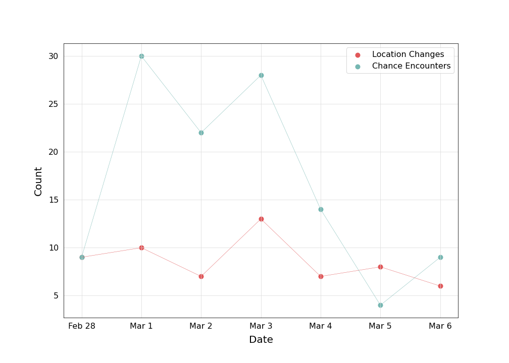

A reflection on the joyful, awkward, social-psychology-supported exercise of interacting with others unexpectedly.
Purpose and Process
The chance encounters project takes inspiration from Georgia Lupi and Stefanie Posavec’s Dear Data project. Each week for a year, Lupi and Posavec collected and measured data about their lives and mailed the results to each other. Dear Data disrupts our idea of how data visualizations should look—sleek, simple, and quick-to-process. The project advocates for data humanism, which involves high-dimensional data visualizations that connect numbers to the people behind them, and require time and intention to understand.
One reason why I love being a college student is because it’s impossible to walk across campus without seeing someone you know. The following visualizations act as my data-driven diary to support that experience. I collected data on each of the chance encounters I had between February 28 and March 6. Whenever I mentioned this project to a friend (many of whom are in this dataset) their first question was, “What counts as a chance encounter?” I’ve settled on the loose definition: A verbal interaction with a person whom I was not expecting to see.
The data collection consisted of pleasant interactions with people I know, and then a quick trip to my Notes app to jot down the Date, Time, First Name, Last Name, Relationship (a description of how I know the person for my own reference), a Relationship Category (colleague, acquaintance, friend, etc.), Activity (what I was doing when I had the chance encounter, for my own reference), Duration (quick hello, short conversation, long conversation), In Transit (a yes/no variable recording whether I was walking between locations) , How often I see the person, Location (qualitative description), and latitude/longitude coordinates.
This project seeks to support the idea that connecting with strangers, acquaintances, and friends through chance encounters is an underrated exercise for practicing compassion and understanding.
Hand-Drawn Visualization
Below is the centerpiece of the project, a hand-drawn visualization. Each line on the visualization represents a different day, and each circle represents a chance encounter. A combination of size, color, line, and shadow describe the interaction.
I noticed that I run into a near equal number of close friends, friends, acquaintances, and colleagues. I tend to have longer conversations with my close friends and colleagues, and shorter interactions with friends and acquaintances.
The Counts are What Counts
After one week of mapping my chance encounters, I learned a lot about myself and my routines.
In total, I had 116 chance encounters. 73 of those encounters happened
while I was in transit—walking between locations. That means about 63% of my chance
encounters occurred while I was walking.
I had chance encounters with 84 unique people.
Of course, I encountered one person more than anyone else. I had 4 unexpected
interactions with my suitemate, Ginny. The race for second was contentious, too.
I saw my friends Aubrey, Chelsea, Kevin, Matt, Max, Selene, and Tyler 3
times each.
The table and accompanying line graph compare the number of chance encounters for each day with the number of location changes on the same day. In general, I have more chance encounters when I change locations often. This trend is unsurprising, as the majority of my chance encounters happen during while in transit. Location changes allow you to encounter people walking the opposite direction, especially when the location change involves some sort of communal travel like walking in public or taking the bus. Interactions like these make the journey between locations feel worthwhile, and provide a snap back to reality for moments when our mind wanders.
| Day | 1 | 2 | 3 | 4 | 5 | 6 | 7 | Total |
|---|---|---|---|---|---|---|---|---|
| Number of Chance Encounters | 9 | 30 | 22 | 28 | 14 | 4 | 9 | 116 |
| Location Changes | 9 | 10 | 7 | 13 | 7 | 8 | 6 | 60 |
| Number of Chance Encounters While In Transit | 1 | 22 | 8 | 23 | 7 | 4 | 8 | 73 |

Interactive Map of Interactions, Mapped
Each chance encounter is plotted as a point on a map of the William & Mary campus. The map provides an indication of my and student hubs on campus; I had a large cluster of chance encounters on the Sadler Center Terrace, which has earned a reputation for chance encounters already. Most students will agree that you can’t walk across Terrace without seeing someone you know!
Points are color-coded according to the duration of the interaction. The colors reveal that many of my “quick hellos” happen along my walking paths. Viewers can also choose to filter the map by relationship category—close friend, friend, colleague, acquaintance, and stranger—by clicking on any bar in the bar chart. Filtering the plotted points using the bar charts reveals interesting patterns. I most often see my close friends and friends in social student hubs like the dorms, the Sadler Center and Sunken Garden. I see colleagues more often in study spaces like Swem Library and the Integrated Science Center (home to my research lab, the W&M geoLab ). I see acquaintances in locations scattered around campus with no clear clustering. I imagine this is because acquaintance is the most general term—we can meet acquaintances in many different places.
The map also reveals where I spend the most time. Anyone familiar with the listed buildings could guess where I live, eat, go to class, walk between classes, and spend my free time.

Conclusion
I first connected with this idea while listening to a talk from Yale psychology professor, Laurie Santos. The talk challenged people’s expectations about happiness, the of directing one’s happiness toward others (even when it feels like a personal sacrifice), and our relationship to the present moment.
Chance encounters are an overlooked opportunity to make others feel accepted and create a culture that values strangers as if they were friends. That culture already exists at William & Mary. So, it is our job as students to recognize the privilege of knowing almost everyone around you, and project that feeling onto everyone we encounter on elevators, coffee shops, and busy streets in the real world.
By Anna Glass.
Website adapted from a CSS template by Dave Shea.